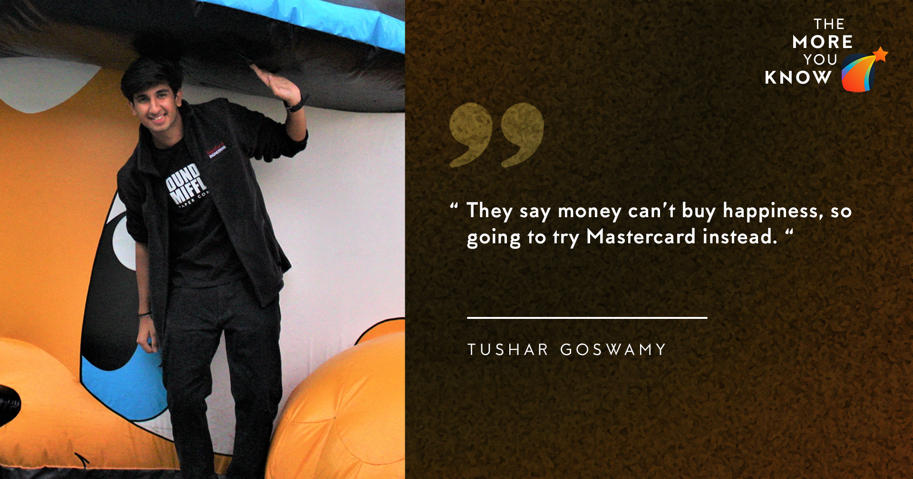

May 27, 2020
Hi!
My primary motive for writing this blog is to help and guide any student who feels that he/she has a low CPI and/or does not belong to a ‘top’ branch since I had a similar profile. There are ample resources and blogs to guide those who have a stellar academic record and belong to the ‘top’ branches which tech companies prefer. Hence I want to reach out to the students who do not fit this criterion and provide tips based on my personal experience.

MY PROFILE AND BACKGROUND
CPI: My CPI was 7.8 at the time of applying, which lies below the ‘safe’ CPI of 8 as cited by most students and seniors
Branch: My Branch is Aerospace, which is an excellent branch in terms of giving you ample time to focus on other activities without compromising on your academics, but does not fit into the ‘top’ branches which most companies prefer.
Summer Intern: I had a summer research internship at the University of Tokyo, Japan in my 2nd year which helped my profile.
PoR: I am the founder and group leader of the IITK Consulting Group, which doesn’t fit into the conventional PoRs, but it helped in providing a unique aspect to my profile.
THE PRELUDE (PREPARATION)
I vividly remember returning to India during the 2nd week of July with fond memories of my internship and looking forward to working towards securing an equally good internship in the corporate sector. My inclination was towards an internship either in Consulting or Product Management, and I had prepared a list of firms that I will be targeting. However, I soon found out that none of the companies which visit the campus for internships were aligned with the aforementioned fields. Thus, I decided to try for the internships which were closest to my interests and simultaneously pursue consulting and PM internships off-campus.
Due to a research paper deadline, as well as applications for some off-campus positions, I wasn’t able to devote much time for preparation.
During the 1st week of internships, I selectively prepared for the Data Interpretation Test (Capital One) and went through notes of Probability and Statistics, which I borrowed from my Electrical friends. I also attended the GD prep sessions organised by the SPO, which proved to be very helpful. Finally, I got shortlisted for CapitalOne (Day 1) and Nomura (Day 2).
THE INTERLUDE (Tests and Interview Experience)
The first company I interviewed for was CapitalOne, and I applied for the Analyst profile. Capital One hosts a Data Interpretation Test for screening candidates, which basically requires quick calculations and interpreting the results from the graphs provided. The next round is the interview where I was asked a quantitative case study about an Insurance firm. Unfortunately, I could not clear the interview.
The next day I was shortlisted for Nomura and had the most interesting interview experience so far. The first round was Group Discussion, and our topic was something along the lines of ‘How print media can compete with online news agencies in today’s internet age’. The Group Discussion was well moderated by the executives from Nomura, and I was confident that I would make the cut. However, the list of selected candidates uploaded on the SPO portal was smaller than what we expected, with no one from my GD batch qualifying for the next round. We were informed that the list of selected candidates as shared by the company has been uploaded, and we will be notified if there are any updates. I was dejected and unable to convince myself that my entire group for the GD was rejected by the company, despite having a fruitful discussion. I waited in my room for the next hour as the 1st round of interviews were on the verge of culmination, unable to resolve the conflict in my mind. I remembered an excerpt from Mr Rajat Gupta’s biography (the first non-white Global Managing Director of Mckinsey & Company and the founder of the Indian School of Business), who himself was rejected in the group discussion round of ITC, but was confident that he deserved to reach the next round. Faced with a dilemma, he approached his recruiter with a resolve that he deserved a shot at the interview, and ultimately received a full-time offer at the company.
Interestingly, something similar happened to him when he applied for Mckinsey and got rejected. He went on to not only get a job offer from the company but ended up as their Managing Director. I decided to approach the Moderator of my GD and waited outside the interview room, trying to avoid any suspecting SPO volunteers from catching me. When he finally came out of the interview room, I shared my thoughts about no one from my group qualifying for the next round, and that I wanted to understand where my performance lacked. To my surprise, he remembered me by my name and mentioned that he was confident that my name was submitted. It turned out that one of the lists of students provided by the company got misplaced somewhere. The reason I mentioned this incident is that the entire process is prone to human error, and while the SPO tries its best to ensure a smooth recruitment process, incidents like these do happen. So if at any point in the recruitment process you are confident about your performance and believe that the results are not in agreement with how you performed, have faith in yourself.
I reached the last round of interviews but unfortunately did not receive an offer from the firm. The achilles heel in my performance which I could identify, was my lack of preparation of puzzles and probability questions. So I strongly advise everyone to thoroughly prepare puzzle-type questions from websites like brainstellar.
At this point, when you have gone through 2 hectic days of interviews, taken multiple tests and attended several PPTs, it is natural to feel dejected and low in spirit. The entire period is a test of your patience and resilience, and it is crucial to learn from the mistakes that you made. It is your response to failure that helps you prepare better for such minor setbacks. This also gives you the clarity to stick to profiles that truly matter to you and are aligned with your interests.
This gave me time to introspect on what I really wanted to achieve out of my internship, and I began to be very selective with the companies and profiles for my applications.
MASTERCARD FINALLY ARRIVES
Mastercard visited our campus for internships after 2-3 years, so I didn’t have any seniors to guide me about the internship experience or the recruitment process. They offered a profile called Software Quality Engineer(QAE), in which interns work with product managers and software engineers and are involved in the entire product development process. Since QAE at Mastercard have a unique opportunity to take on additional leadership, including being product development team leads, it seemed closest to the Product Management roles I was targeting. The first screening round was an online test, where I was given 2 questions. I can’t remember the first one, but the second one was a technical case study about an update to a company’s video conferencing service that they released recently. As soon as the update was released, the users started to face issues. So we had to submit an elaborate plan to tackle this issue. They were primarily interested in how we structure our solution and take into account the technical constraints of the problem.
The next day I went through 3 rounds of interviews before finally receiving an offer, the details of each round can be found below:
Round 1
I was given a case study about an automatic coffee dispensing and delivery machine for an office. In the case study, I was in charge of a company which had to design an automatic coffee dispensing machine for a corporate office that could (a) Prepare coffee for each employee as per his/her preferences and (b) Deliver the coffee to their location without them having to personally visit the coffee machine.
I was asked to list the features required to carry out both tasks and what all issues one could face. Based on the feedback I received, they were primarily looking for how well I was able to structure and break down the problem into logical and manageable sub-tasks, and then address each task properly.
Round 2
They asked a case study about Uber’s smartphone app. I was asked to think of what all features will I include if I had to design the interface of the Uber app, explicitly mentioning the features which were already a part of the app as well as some new features which I could think of. It was a short interview, and the trick was to present the solution from the customer’s Point of Views as well as the driver’s Point of View (Since the app has a slightly different interface when used by a driver and we accordingly need to present the features).
Round 3 (HR)
Reaching the HR round is a very positive indication of receiving an offer. The HR round was pretty laid-back with simple questions about my internship experience in Japan, what was the most difficult situation I faced and how did I overcome it, how did I tackle the language barrier, why Mastercard, my hobbies etc.
THE POSTLUDE (Conclusion)
As I conclude this blog, I would like to once again emphasise that internships are an important way to experience a field that piques your interest, and figure out if you want to work in that field for the long run. Don't let the pressure of the process get to you and force you into opting for something that doesn't interest you. Our choices often get encumbered by pressure from society and our peers and thus get driven by fear rather than our interests. In the end, everything works out to be alright, and if it doesn't, then it's not the end. Don’t let a 2-month internship define you or demotivate you away from what really drives you - life is too short for that!
- Tushar Goswamy